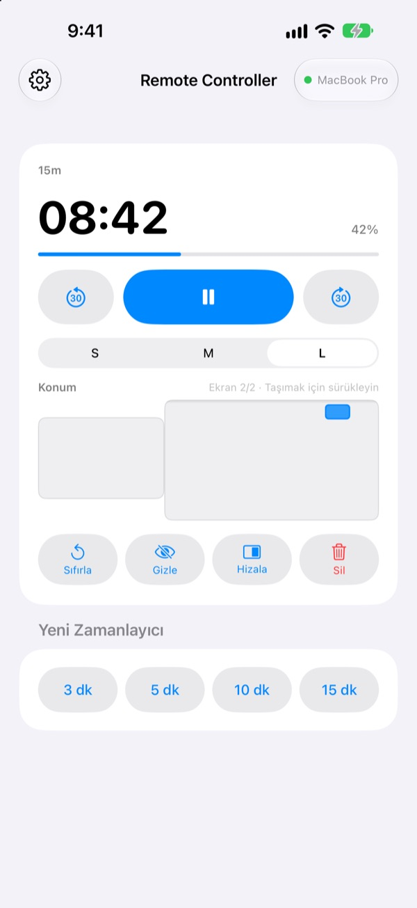
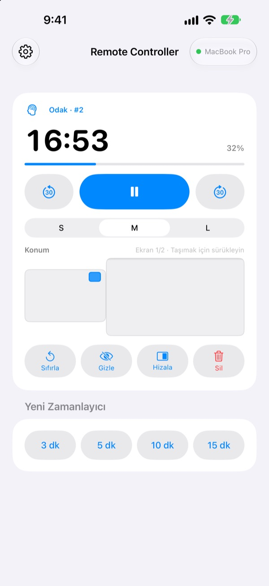
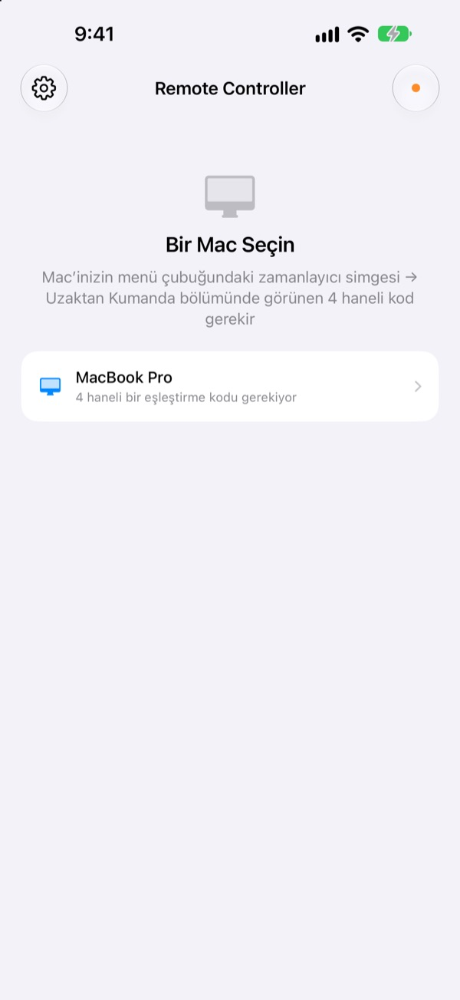

Mac’ten uzaklaşın,
zamanlayıcı elinizde kalsın
Mac’inizdeki StickyPresenter zamanlayıcılarını iPhone’dan yönetin. Salonun önüne yürüyün; kalan süreyi görmeye devam edin, duraklatın, 30 saniye ekleyin ya da grafiği kapatan zamanlayıcıyı kenara kaydırın.
Ücretsiz · iOS 17 veya üstü · Aynı Wi‑Fi ağında StickyPresenter çalışan bir Mac gerekir.

Zamanlayıcıya dokunmak için hâlâ dizüstüne mi yürüyorsunuz?
Konuşmanız uzadı ve biraz daha süreye ihtiyacınız var. Zamanlayıcı da tam en önemli grafiğinizin üstünde duruyor. Şimdiye kadar bu, herkesin önünde sahneyi geçip trackpad’e uzanmak demekti. Remote Controller ile olduğunuz yerde kalır, iPhone’a bir kez dokunursunuz.
Kalan süreyi görün, anında düzeltin
Kalan süre ve ilerleme her saniye güncellenir. Pomodoro’da Odak’ta mı Mola’da mı olduğunuzu ve kaçıncı döngüde olduğunuzu da görürsünüz.
Konuşma uzadı mı? 30 saniye ekleyin. Erken mi bitiyor? 30 saniye çıkarın. Tek dokunuşla 3, 5, 10 ya da 15 dakikalık yeni bir zamanlayıcı başlatın, widget’ı S, M ve L arasında değiştirerek arka sıralardan da okunmasını sağlayın.

Kodu bir kez girin, o kadar
Uygulamayı açtığınızda Wi‑Fi ağınızda StickyPresenter çalışan her Mac listede görünür. Kendi Mac’inizi seçin ve Mac’in menü çubuğundaki zamanlayıcı simgesi ▸ Uzaktan Kumanda bölümündeki dört haneli kodu girin.
Bundan sonra uygulama her açıldığında o Mac’e kendiliğinden bağlanır. Hesap yok, sunucu yok: iki aygıt yerel ağınız üzerinden doğrudan konuşur.

Üç adımda kullanıma hazır
- 1
Mac’inizde StickyPresenter’ı açın
Menü çubuğunda zamanlayıcı simgesi görünüyorsa hazırsınız. Tüm pencereleri kapatsanız da uygulama orada kalır.
- 2
Uygulamayı aynı Wi‑Fi ağında açın
Yerel Ağ erişimi istendiğinde İzin Ver’e dokunun. Uygulama Mac’inizi bu sayede bulur.
- 3
Mac’inizi seçip kodu girin
Mac’in menü çubuğundaki zamanlayıcı simgesi ▸ Uzaktan Kumanda bölümünde görünen dört haneli eşleştirme kodunu yazın; kontrol artık sizde.
iPhone’dan neler yapabilirsiniz
- Kalan süre
- Kalan süre, ilerleme, Pomodoro’da Odak ya da Mola ve döngü numarası, her saniye
- Başlat · Duraklat
- Ortada tek büyük düğme
- −30 sn · +30 sn
- İki yandaki düğmeler çalışan zamanlayıcıyı anında ayarlar
- Yeni Zamanlayıcı
- 3, 5, 10 ya da 15 dakika
- Widget Boyutu
- Widget S, M ya da L boyutunda
- Konum
- Mac’inizin ekran düzeninin küçük bir kopyasında sürükleyin, genişletilmiş ekrana bile
- Gizle
- Widget’ı izleyicilerden kısa bir süre gizleyin
- Hizala
- Kaybolan widget’ı zamanlayıcı penceresinin yanına geri getirin
- Sıfırla · Sil
- Zamanlayıcıyı baştan başlatın ya da kaldırın
- Kestirmeler · Siri
Remote Controller ile zamanlayıcı başlatdeyin, Mac’inizde zamanlayıcı açılsın
Kumanda yalnızca Mac’inizde çalışan zamanlayıcılarla çalışır. Notlar ve teleprompter metinleri iPhone’a asla gönderilmez; uygulama slayt da geçirmez.
Sorular
iPhone uygulamasını tek başına kullanabilir miyim?
Hayır. Remote Controller, Mac’teki StickyPresenter’ın kumandasıdır; bu yüzden aynı Wi‑Fi ağındaki bir Mac’te StickyPresenter’ın çalışıyor olması gerekir. Mac uygulamasını aşağıdaki bağlantıdan ya da uygulamanın Ayarlar bölümündeki Mac Uygulamasını Edinin’den indirebilirsiniz.
Mac’im listede görünmüyor.
10 saniye içinde hiçbir Mac görünmezse uygulama bir kontrol listesi gösterir. Yukarıdan başlayarak ilerleyin: Mac’te StickyPresenter çalışıyor (menü çubuğunda zamanlayıcı simgesi var), iki aygıt da aynı Wi‑Fi ağında (misafir ağları çalışmaz), iPhone’da Ayarlar ▸ Gizlilik ve Güvenlik ▸ Yerel Ağ bölümünde Remote Controller açık, Mac’te Sistem Ayarları ▸ Gizlilik ve Güvenlik ▸ Yerel Ağ bölümünde StickyPresenter’a izin verilmiş ve VPN kapalı.
Eşleştirme kodunun yanlış olduğu söyleniyor.
Mac’in menü çubuğundaki zamanlayıcı simgesi ▸ Uzaktan Kumanda bölümünde şu an görünen dört haneyi girin. Biri Mac’te Yeni Eşleştirme Kodu’nu seçtiyse yalnızca yeni kod geçerlidir.
Mac’in bu iPhone’u tanımadığı söyleniyor.
Bu, Mac’te Eşleşen Uzaktan Kumandaları Unut seçildikten ya da StickyPresenter yeniden yüklendikten sonra olur. Listede Mac’e dokunun ve eşleştirme kodunu bir kez daha girin.
Mac’in yanıt vermediği söyleniyor.
Mac’in uyku modunda olmadığını, iki aygıtın aynı Wi‑Fi ağında olduğunu ve VPN’in kapalı olduğunu kontrol edin.
Mac uygulamasının güncellenmesi gerektiği söyleniyor.
Mac’inizdeki StickyPresenter, kumandadan daha eski bir sürüm. Mac App Store’dan güncelleyin, ardından Mac’i yeniden seçin.
Mac dolu bir toplantı odasında güvenli mi?
Evet. Kumanda yalnızca eşleştiği tek Mac ile konuşur; kodunuzu bilmeyen bir kumanda Mac’inize ulaşamaz. Her şey aynı ağ içinde şifreli, doğrudan bir bağlantıyla taşınır. Kodunuzu birine gösterdiyseniz Mac’te Yeni Eşleştirme Kodu’nu seçin.
İnternete ne gönderiliyor?
Zamanlayıcılarınız ve komutlarınız yerel ağınızın dışına hiç çıkmaz. İnternete giden tek şey anonim kullanım istatistikleri, çökme raporları ve kendi isteğinizle gönderdiğiniz geri bildirimlerdir. Ayrıntılar gizlilik politikasında.
Sahneye çıkmadan hemen önce Siri zamanlayıcı başlatabilir mi?
Evet. "Remote Controller ile zamanlayıcı başlat" deyin ya da Kestirmeler’deki Mac’te Zamanlayıcı Başlat eylemini kullanın. Uygulama açılır ve Mac’e bağlanır bağlanmaz seçtiğiniz uzunlukta (1 ile 600 dakika arası) bir zamanlayıcı başlatır.
Sorularınız, hata bildirimleriniz ya da fikirleriniz için mizzking75@gmail.com adresine yazın veya doğrudan iPhone’dan gönderin: uygulamanın sol üstündeki dişli ▸ Geri Bildirim.